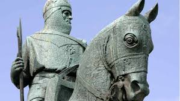
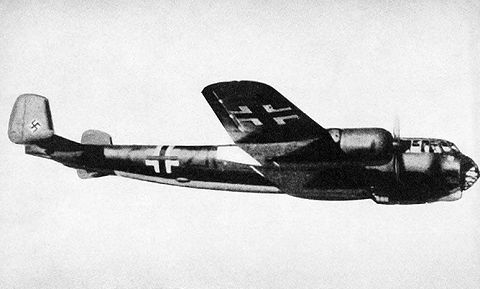

During the Wars of Scottish Independence, Aberdeen was under English rule, so Robert the Bruce laid siege to Aberdeen Castle before destroying it in 1308, followed by executing the English garrison. The city was burned by Edward III of England in 1336, but was rebuilt and extended. The city was strongly fortified to prevent attacks by neighbouring lords, but the gates were removed by 1770.
During the Wars of the Three Kingdoms of 1644 to 1647 the city was plundered by both sides. In 1644, it was taken and ransacked by Royalist troops after the Battle of Aberdeen and two years later it was stormed by a Royalist force under the command of the George Gordon, 2nd Marquis of Huntly. An outbreak of bubonic plague over 1687 and 1688 killed 8.5% of the population, adding to the economic and demographic damage caused by war. In the 18th century, a new Town Hall was built and the first social services appeared with the Aberdeen Infirmary at Woolmanhill in 1739 and the Aberdeen Lunatic Asylum in 1800.
Over the course of World War II Aberdeen was attacked 32 times by the German Luftwaffe. One of the most devastating attacks was on Wednesday 21 April 1943 when 29 Luftwaffe Dornier 217s flying from Stavanger, Norway attacked the city between the hours of 22:17 and 23:04. A total of 98 civilians and 27 servicemen were killed, along with 12,000 houses damaged, after a mixture of 127 Incendiary, High Explosive and Cluster bombs were dropped on the city in one night.
Site Navigation